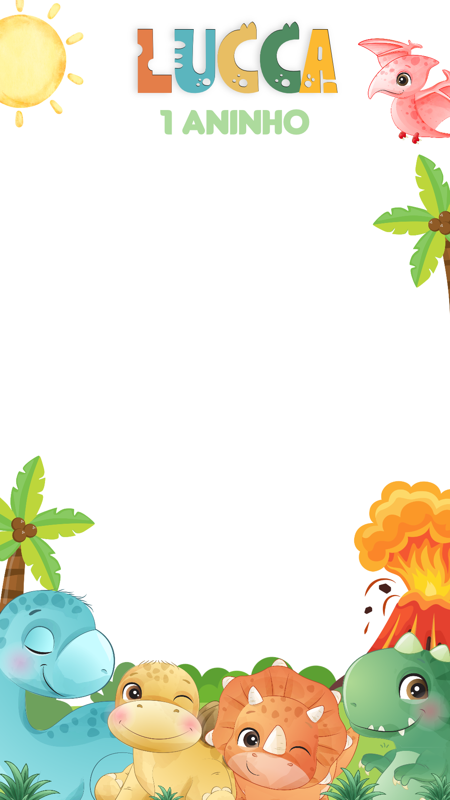

UM MOMENTO PARA GUARDAR
1 aninho do
Lucca
Use a moldura e registre esse momento especial.
Permita o acesso à câmera quando solicitado.
Use a moldura e registre esse momento especial.
Permita o acesso à câmera quando solicitado.

MOMENTO REGISTRADO